DeiT: Training data-efficient image transformers & distillation through attention
Contents
DeiT: Training data-efficient image transformers & distillation through attention#
Abstract#
최근 attention에 기반한 뉴럴넷 모델들이 vision task에서 많이 활용되고 있으나 vision transformer로 high performance를 달성하기 위해서는 수억개의 데이터셋, 이를 위한 충분한 하드웨어 리소스가 필요하다는 limitation이 있습니다.
본 논문에서는 ViT와 마찬가지로 convolution을 사용하지 않으면서 추가적인 데이터셋 없이 ImageNet 데이터셋만 사용하되, 3일 이내로 학습하여 top-1 accuracy 83.1%(single-crop)라는 높은 성능을 달성하였습니다. 이를 위해 저자들은 teacher-student strategy라는 knowledge distillation과 distillation token을 새롭게 제안하여 student 모델이 teacher 모델로부터 attention을 통해 효과적으로 학습될 수 있음을 보여주었습니다.
1. Introduction#
ViT가 image classification에서 SOTA를 달성했지만 이러한 성능을 달성하기 위해서는 JFT-300M 같은 매우 큰 데이터셋과 이를 빠른 시간에 학습시키기 위한 하드웨어가 필요하다는 단점이 있고 이는 ViT 논문에서도 “do not generalize well when trained on insufficient amounts of data”라고 말합니다.
본 논문에서는 ViT 아키텍처를 그대로 사용하면서 ImageNet 데이터셋만 학습하여 single 8-GPU로 약 53시간 정도로 CNN과 competitive한 성능을 내게 됩니다.
즉, token 기반의 teacher-student knowledge distillation을 통해 데이터를 효율적으로 학습하는 Data-efficient image Transformer (DeiT)를 제안합니다.
본 논문의 contribution은 다음과 같습니다.
convolution layer, external data를 사용하지 않고 imagenet SOTA를 달성하였습니다. 제안하는 DeiT-S, DeiT-Ti 모델은 ResNet-50, ResNet-18보다 파라미터 수가 적음에도 accuracy는 더 높은 결과를 보여줍니다.
transformer에서 attention을 통해 다른 token들과 interaction할 수 있는 distillation token을 새롭게 제안하였습니다. 제안하는 distillation token 기반의 knowledge는 vanilla distillation 방식보다 outperform한 결과를 보여줍니다.
제안하는 distillation에서는 teacher 모델로 transformer보다 CNN을 썼을 때 더 성능이 증가함을 보여줍니다.
제안하는 모델을 Imagenet으로 pre-training하여 downstream task에서 실험해봤을 때도 competitive한 성능을 달성합니다.
3. Vision transformer: overview#
Multi-head Self Attention layer (MSA)#
attention 매커니즘은 학습가능한 key, value vector pair에 기반하여 주어진 Query vector와 Key vector 간의 내적을 통해 Query, Key 간의 연관성을 계산하고 이 결과를 scaling 하고 softmax를 취해 0~1 범위의 softmax score를 계산합니다.
softmax score와 Value vector를 곱하여 attention을 계산합니다.
Multi-head self-attention (MSA)는 위의 attention 과정을 head의 개수만큼 병렬처리 하여 patch들 간의 관계를 다양한 관점에서 바라봅니다.
Transformer block for images#
ViT 구조를 그대로 차용하기 위해 MSA layer 위에 FFN만 추가합니다.
FFN은 two linear layer, GeLu, skip connection, layer normalization으로 구성됨
transformer는 image를 여러 개의 고정된 크기의 patch로 분할하여 N개의 patch로 구성된 sequence로 입력 받습니다. 각 patch는 linear layer를 통해 768차원(3x16x16=768) vector가 됩니다. 추가로 sequence를 구성하는 patch들의 relative position 정보를 부여하기 위해 학습 가능한 positional embedding을 통해 위치정보를 부여한 뒤에 transformer block으로 입력됩니다.
The class token#
class token은 학습 가능한 vector로써 transformer block으로 입력되기 전 sequence 맨 앞에 추가되어 입력됩니다. patch embedding을 통해 N개의 patch가 나왔다면 class token까지 하나 추가하여 sequence의 길이는 N+1이 되며 prediction에서는 class token만 사용합니다.
class token을 추가함으로써 class token은 attention을 통해 각 patch token들과 interaction이 가능하게 됩니다.
Fixing the positional encoding across resolution#
transformer를 효율적으로 학습시키는 방법은 low resolution으로 학습한 뒤 high resolution으로 fine-tuning 하는 전략을 사용하였습니다.
또한 transformer 구조 특성 상 patch size를 동일하게 사용한다고 했을 때, high resolution에서는 patch 개수가 늘어나게 되지만 patch size만 동일하다면 patch 개수가 늘어난다고 해서 아키텍처를 수정할 필요가 없습니다.
단, sequence 길이가 달라지면 위치 정보에 대한 interpolation이 필요합니다.
4. Distillation through attention#
일반적으로 knowledge distillation은 distillation loss에 smoothing을 적용하느냐에 따라 soft distillation, hard distillation으로 나뉩니다.
Soft distillation#
teacher, student 모델의 softmax output에 대한 Cross entropy, KL divergence를 최소화하도록 하는 학습 전략입니다. 이 때 logit 값을 tau라는 값으로 나눠준 뒤 softmax를 계산하게 되는데 이 과정을 smoothing으로 볼 수 있으며 tau 값이 클수록 smoothing 세기가 강해집니다. soft distillation을 통해 계산된 label을 soft label이라 하며 만약 tau 값이 1이면 smoothing을 안하는 것과 같고 이 경우 hard label이라 부릅니다.
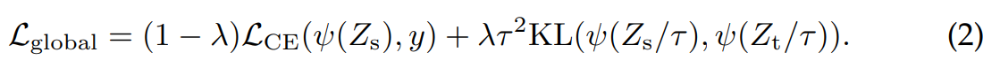
first term : student 모델의 softmax output과 true label간의 CE loss 계산
second term : student 모델의 output을 tau로 나눠준 뒤 softmax로 입력, 마찬가지로 teacher 모델의 output을 tau로 나눠준 뒤 softmax로 입력하여 KL loss를 계산
\(Z_s\) = logits of student
\(Z_t\) = logits of teacher
\(\tau\) = temperature for distillation
Hard-label distillation#
본 논문에서는 hard label에 미세하게 smoothing을 가하는 전략을 사용하였습니다. 즉 argmax로 나온 확률 값에서 가장 크게 나온 class에 대해 one-hot vector를 사용하는 것이 아니라 가장 높게 나온 확률 값을 0.9로 사용하고, 나머지 class들의 합이 0.1이 되도록 합니다.
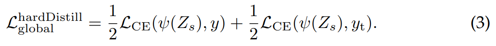
first term : student softmax output과 true label 간의 CE loss 계산
second term : teacher의 prediction 결과를 true label 놓고 CE loss 계산
Distillation token#
본 논문에서는 main contribution이라 할 수 있는 distillation token을 제안하였습니다. distillation token은 초기 embedding 과정에서 class token과 같이 사용되며 self attention을 통해 다른 patch들과 interact하게 됩니다.
class token은 student model의 예측값을 의미하고 이는 GT와 비교하여 loss를 계산합니다. distillation token 또한 student model의 예측 값을 의미하지만 이 token은 GT가 아닌 teacher model의 예측 값과 비교하여 loss를 계산합니다. distillation token을 통해서 student model이 teacher model의 output을 잘 학습할 수 있으며 class embedding에 대한 complementary가 가능해집니다.
학습된 class token과 distillation token의 cosine 유사도를 계산해보면 0.06정도로 서로 다르지만 class embedding, distillation embedding으로 계산했을 때는 0.93 정도로 유사도가 굉장히 높게 나옵니다. 이는, 두 token이 여러 레이어를 거치면서 embedding 되었을 때 서로 유사하지만 유사도가 1보다 작은 값을 갖는 것은 다른 목적의 target으로 생성되기 때문입니다.
teacher pseudo-label 대신 class token 2개를 사용해봤을 때, 두 embedding은 cos 유사도 0.99인 동일한 vector로 수렴하는 결과를 보였습니다. class token을 2개 사용하는 것은 동일한 목적의 target 값을 두개 생성하는 것이고 성능 또한 개선되지 않습니다. 따라서 class 예측과 knowledge distillation이라는 목적에 맞는 두 token을 사용해야 하며 실제로 class token과 distillation token을 함께 써야 성능이 개선됨을 실험에서도 밝힙니다.
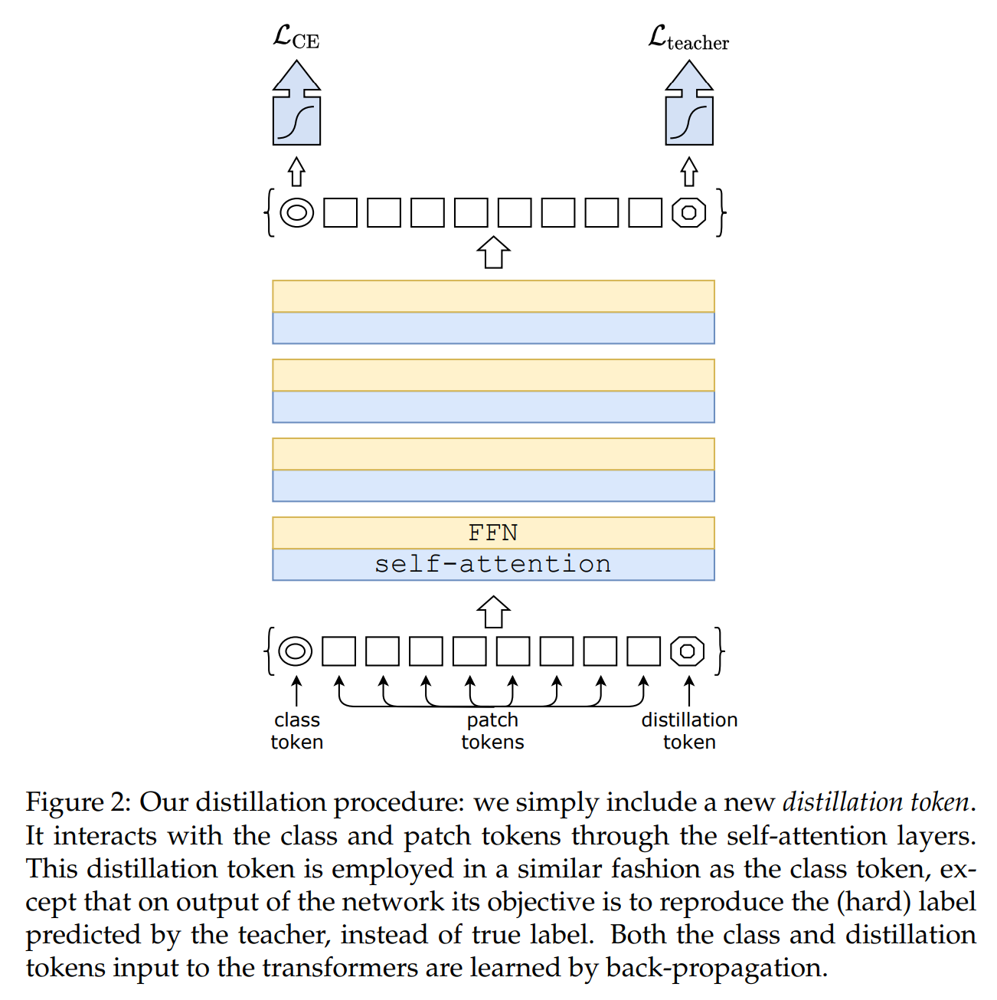
Fine-tuning with distillation#
pre-training시에 low-resolution으로 학습하고 fine-tuning시에 high-resolution으로 학습하는 전략을 사용하였습니다.
Classification with our approach: joint classifiers#
test 시 class token, distillation token 두개를 사용할 수 있는데 여기선 두 개의 separate head로부터 late fusion을 통한 최종 output을 생성합니다. 즉, 두 head로부터 나온 prediction 결과에 softmax를 취한 후, 이를 결합하는 방식을 사용하였습니다.
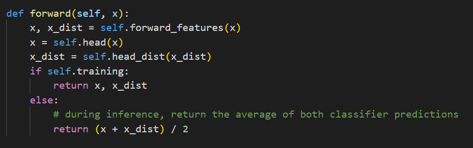
5. Experiments#
5.1 Transformer models#
ViT와 동일한 아키텍처 디자인을 사용하였으며 차이점은 학습 시 distillation token이 추가된다는 것 말고는 없습니다.
아키텍처가 ViT와 동일하기 때문에 논문에서 혼동을 방지하고자 knowledge distillation을 쓰는 경우 DeiT라고 합니다.
DeiT는 DeiT-B (Base)를 의미합니다. DeiT-B는 ViT-B와 동일합니다.
fine-tuning시 high-resolution에 대한 정보를 표기하기 위해 DeiT-B↑384로 resolution을 표기합니다. distillation token을 사용하는 경우 alembic sign을 추가하여 DeiT⚗로 표기합니다.
DeiT-S, DeiT-Ti 모델에서 depth는 동일하게 사용하고 head 개수만 변경하였습니다.
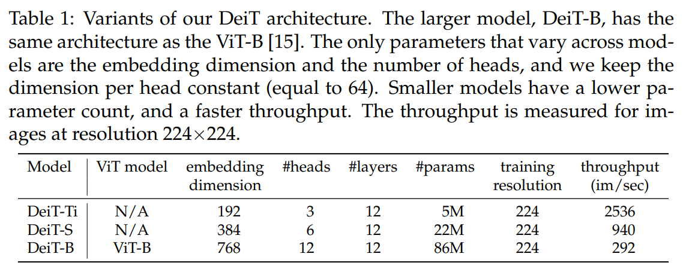
5.2 Distillation#
제안하는 distillation method를 통해 vision transformer를 best CNN과 유사한 성능(accuracy, throughput 측면에서)을 내는 결과를 보여주었으며 distilled model이 teacher model 보다 outperform한 결과가 나오기도 합니다.
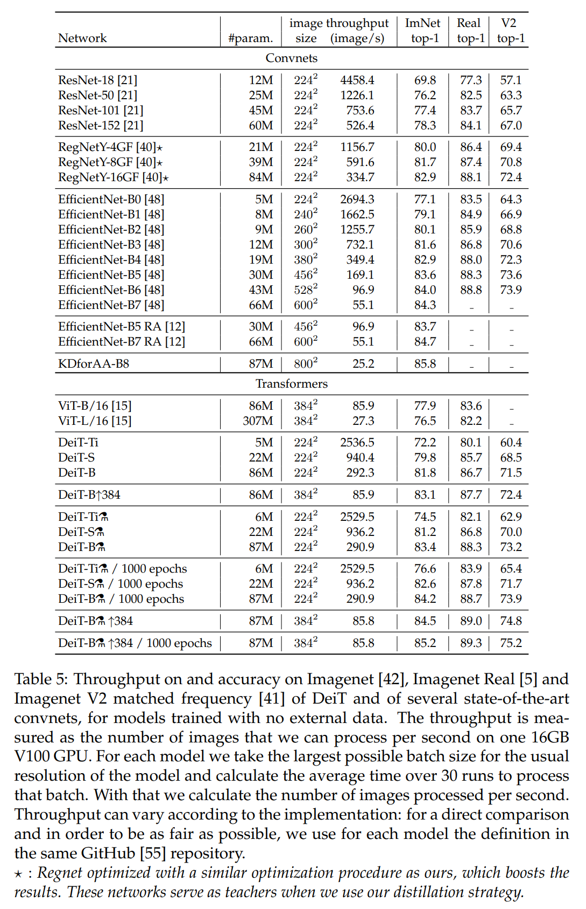
Convnets teachers#
teacher model로 transformer와 CNN 중 CNN 썼을 때 더 높은 성능이 나오게 되는데 이는 CNN이 가지고 있는 inductive bias가 distillation을 통해 student model로 주입되어 성능이 개선되었다고 볼 수 있습니다.
이후 실험에선 RegNetY-16GF 모델을 default teacher로 사용함
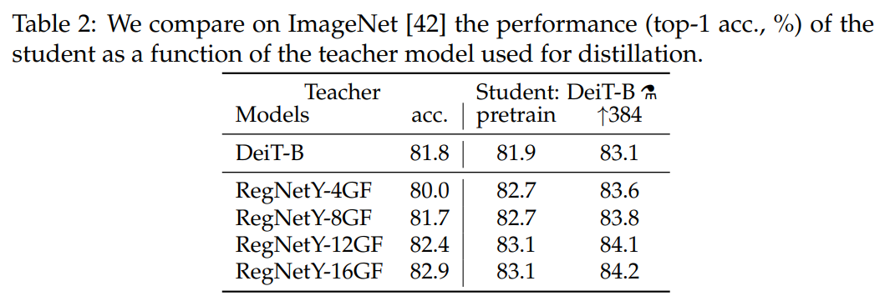
Comparison of distillation methods#
distillation 전략을 다르게 하여 실험한 결과입니다. 먼저, distillation 유형에 따른 결과를 보면 soft distillation 보다 논문에서 사용하는 hard distillation이 outperform한 결과를 보여줍니다. hard distillation을 기반으로 해서 여기에 distillation token까지 추가했을 때, 성능이 더 개선되는 결과가 나오게 됩니다.
이러한 결과가 나오게 되는 이유는 classification task에서 class token과 distillation token이 서로 complementary useful information을 만들어내고 이로 인해 성능이 더 개선된다고 볼 수 있습니다.
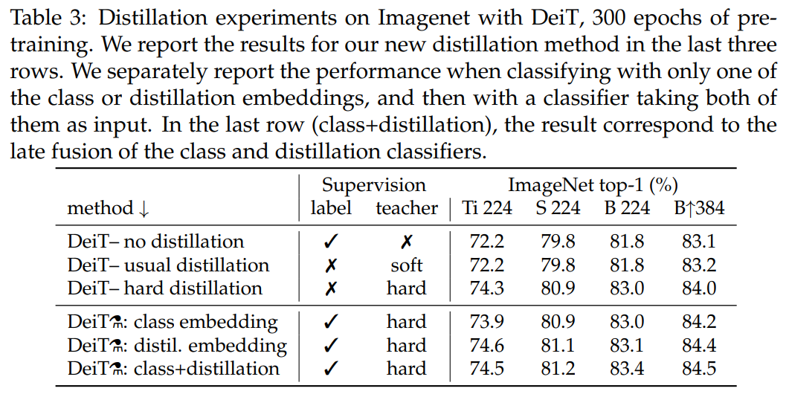
Agreement with teacher & inductive bias?#
각 모델간의 disagreement를 비교한 결과로 error rate 값으로 봐도 무방합니다.
논문에서 제안하는 방식으로 학습된 모델을 no distillation CNN과 no distillation DeiT와 비교해봤을 때 CNN과 좀 더 상관관계가 있음을 보입니다. 이는 CNN의 inductive bias가 잘 전달되었기 때문에 CNN과 좀 더 유사한 결과가 나온 것으로 볼 수 있습니다.
또한, 모델에 존재하는 class embedding classifier, distillation embedding classifier인 두 classifier와 CNN을 비교했을 때 distillation embedding classifier보다 CNN에 더 close한 결과가 나오게 되고 반대로 class embedding classifier는 no distillation DeiT(=ViT)과 비슷한 결과를 보입니다.
이는, distillation embedding은 teacher (CNN)의 knowledge를 잘 전달받기 때문에 CNN에 더 가까운 결과를 보이고 class embedding은 구조적으로 ViT와 같기 때문에 no distillation DeiT와 더 가까운 것으로 볼 수 있습니다.
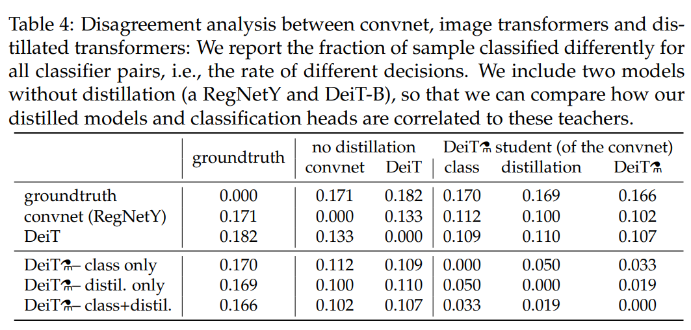
Number of epochs#
300 epochs만 학습했을 때도 이미 DeiT-B⚗가 DeiT-B보다 성능이 더 잘 나오지만 여기서 더 epochs 수를 증가시켜 학습을 더 진행했더니 distillation token 기반 모델의 성능이 개선되는 현상을 보였습니다. 또한 DeiT-B는 금방 saturation되나 DeiT-B⚗는 saturation이 더 늦게 나타나거나 fine-tuning까지 적용하는 경우 100 epoch까지도 성능이 지속적으로 증가하는 결과를 보입니다.
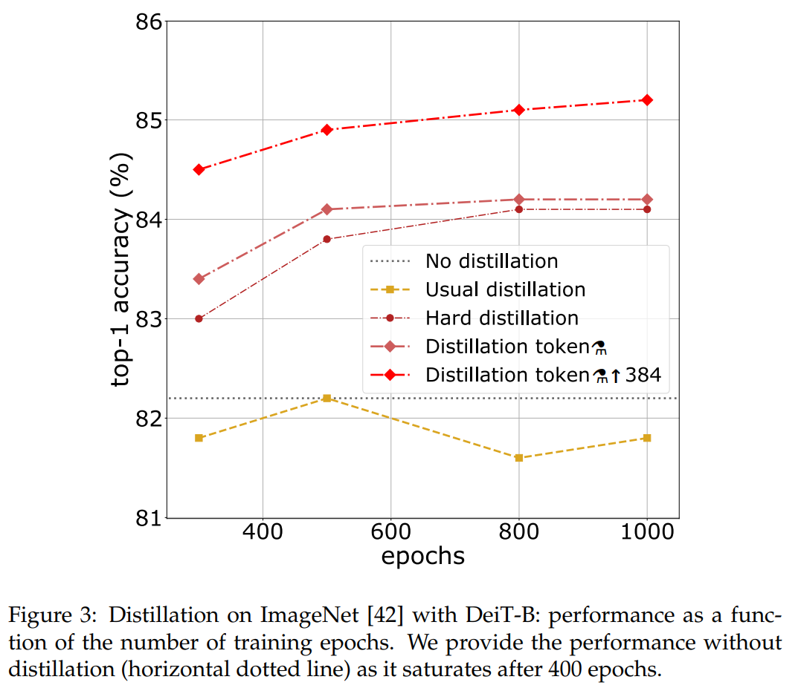
5.3 Efficiency vs accuracy: a comparative study with convets#
throughput과 accuracy간의 trade-off를 고려하여 성능을 비교한 결과이며 제안하는 DeiT-⚗가 ViT는 물론 EfficientNet보다 성능이 훨씬 잘 나오는 결과를 보였습니다.
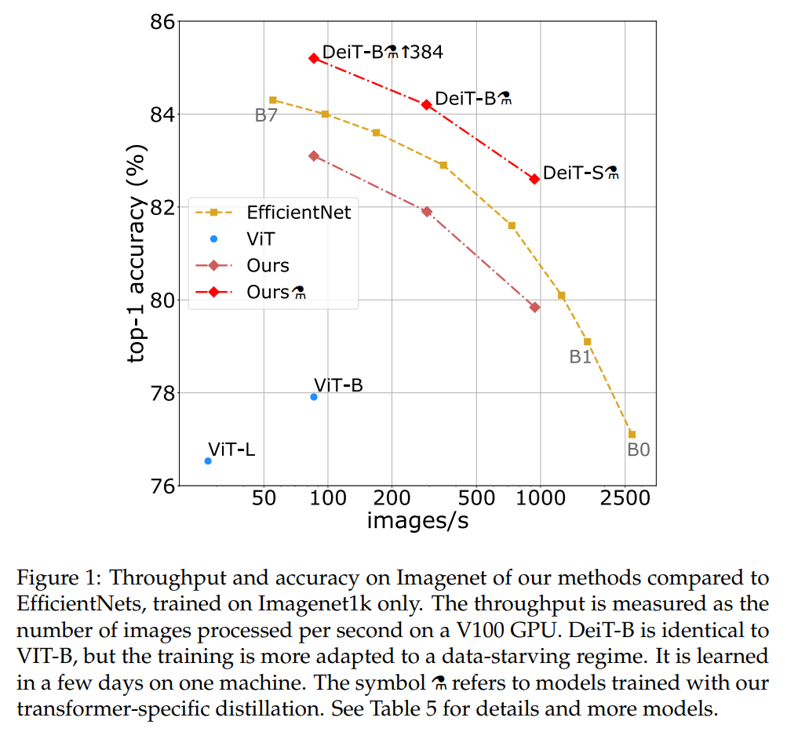
5.4 Transfer learning: Performance on downstream tasks#
ImageNet으로 사전학습 후 다른 downstream task에서 평가한 결과입니다.
DeiT는 대체적으로 CNN 모델과 비슷한 성능을 내며, ViT 보다는 확실히 성능이 많이 증가한 결과를 보입니다.
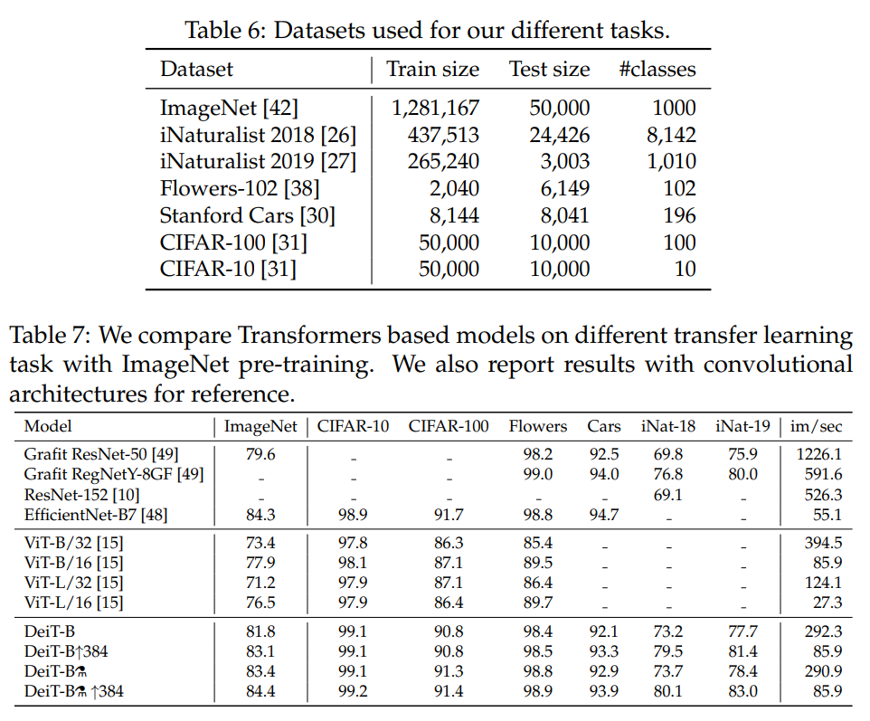
6. Training details & ablation#
Data-Augmentation#
transformer가 larger amount dataset을 필요로 하기 때문에 DeiT 역시 data augmentation을 strong하게 적용합니다. 적용된 대부분의 augmentation이 useful했으나, dropout의 경우 썼을 때 성능이 감소하는 결과가 있어서 학습에서 제외하였습니다.
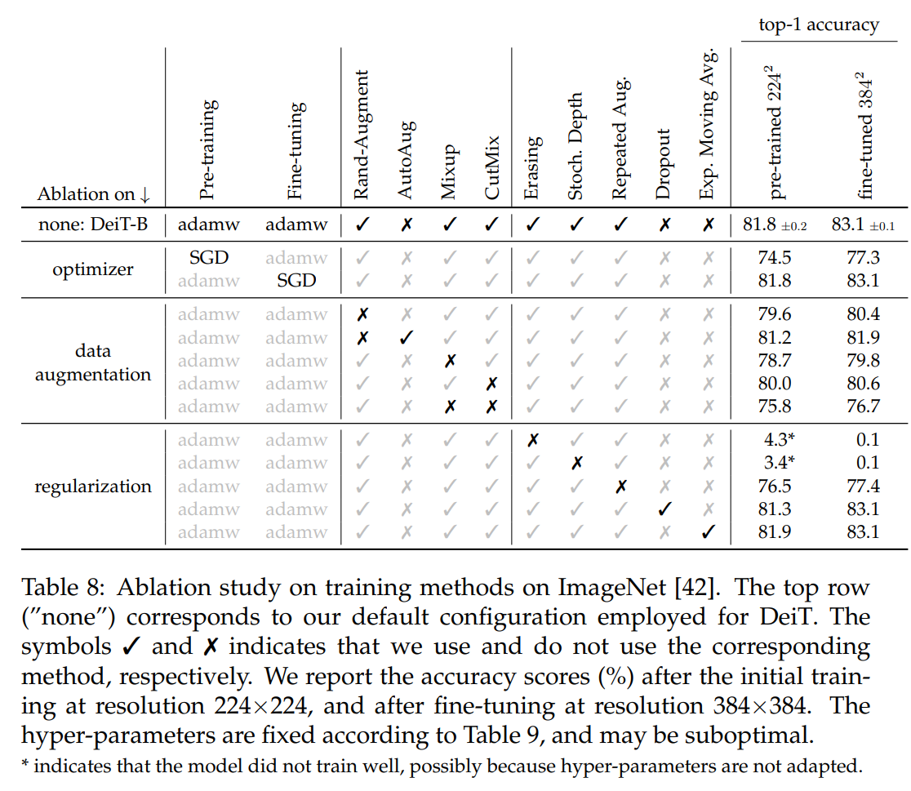
Training time#
2 node(16 GPUs)로 300 epoch 학습시킬 시 약 37시간 정도가 소요됐고 single node(8 GPUs)로 학습시 약 53시간 정도 소요되었습니다. 비슷한 크기의 CNN 모델인 RegNetY-16GF (84M parameters)와 비교했을 때보다 20% 빠르게 학습시킬 수 있습니다.
7. Conclusion#
본 논문에서 image transformer 모델을 학습시키기 위해 large amount dataset이 필요하다는 문제를 효율적으로 해결하였습니다. DeiT는 distillation token 기반의 distillation procedure를 통해 효율적으로 transformer를 학습시킬 수 있었습니다.
distillation token뿐만 아니라 CNN에서 적용되었던 다양한 data augmentation, regularization method를 DeiT에 적용함으로써 별다른 아키텍처 수정 없이도 최적화된 CNN과 비교했을 때 competitive한 성능을 낼 수 있었습니다. 또한, image transformer는 throughput 측면에서 CNN보다 더 효율적인 선택이 될 수 있음을 여러 실험을 통해 보여주었습니다.
Author by 이명오
Edit by 김주영